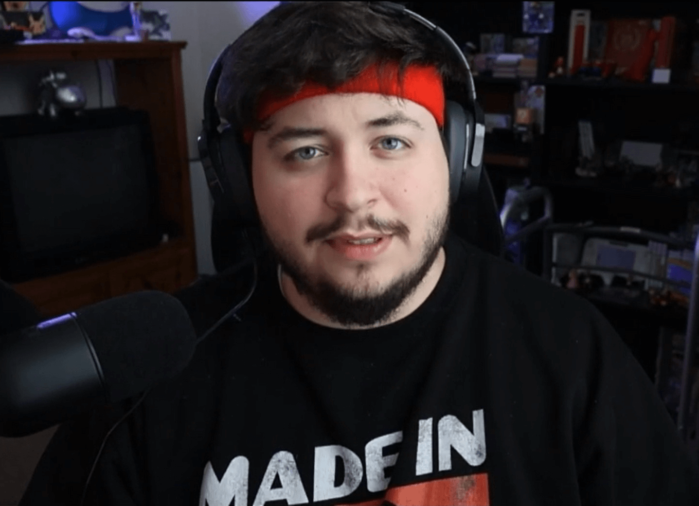
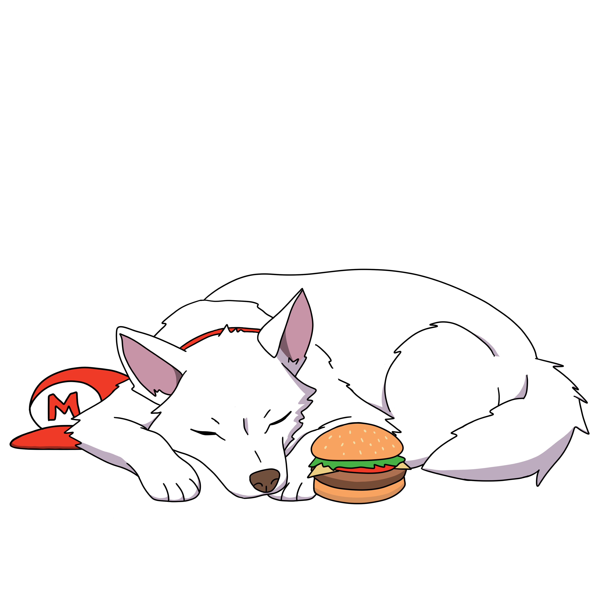

Meet Luey
I’m Luey, a passionate retro video game enthusiast and content creator. I have been playing retro video games for as long as I can remember. My journey in the business of the gaming world began in 2019 when I started reselling broken Game Boys and consoles, repairing them, and selling them on eBay for profit. This hobby sparked a deep love for collecting and customizing retro games and consoles.
In 2020, I took my passion to the next level by launching my Twitch channel. Though I have had to take breaks due to my active duty enlistment in the military, I’m thrilled to return to streaming and share engaging content across various platforms. Whether it’s live streams on Twitch, videos on YouTube, or posts and stories on social media, I am committed to connecting with fellow gamers and retro enthusiasts regularly. I also operate a store on eBay and Whatnot, where I buy, sell, and trade video games and consoles. My specialization includes customizing Game Boys with IPS screen mods and unique shells, bringing a new life to these classic devices.
SHOP
In 2020, I took my passion to the next level by launching my Twitch channel. Though I have had to take breaks due to my active duty enlistment in the military, I’m thrilled to return to streaming and share engaging content across various platforms. Whether it’s live streams on Twitch, videos on YouTube, or posts and stories on social media, I am committed to connecting with fellow gamers and retro enthusiasts regularly. I also operate a store on eBay and Whatnot, where I buy, sell, and trade video games and consoles. My specialization includes customizing Game Boys with IPS screen mods and unique shells, bringing a new life to these classic devices.


In May 2023, I married my wonderful wife, Meaghan (also known as Mirvi_Gaming_Gal). Together, we have adopted four adorable huskies, and Shoto, our white husky, has even become an official member of our team, representing our brand as a mascot.
While we may be a small company now, our goal is to grow alongside the amazing community of gamers we meet along the way. Every day, we connect with fellow enthusiasts who share our passion, and we strive to turn our side hobby into a thriving business built on love for what we do.
Thank you for joining me on this exciting journey in the retro gaming world. Let’s connect, share experiences, and keep the spirit of gaming alive!
While we may be a small company now, our goal is to grow alongside the amazing community of gamers we meet along the way. Every day, we connect with fellow enthusiasts who share our passion, and we strive to turn our side hobby into a thriving business built on love for what we do.
Thank you for joining me on this exciting journey in the retro gaming world. Let’s connect, share experiences, and keep the spirit of gaming alive!